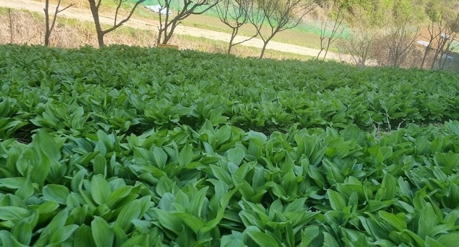
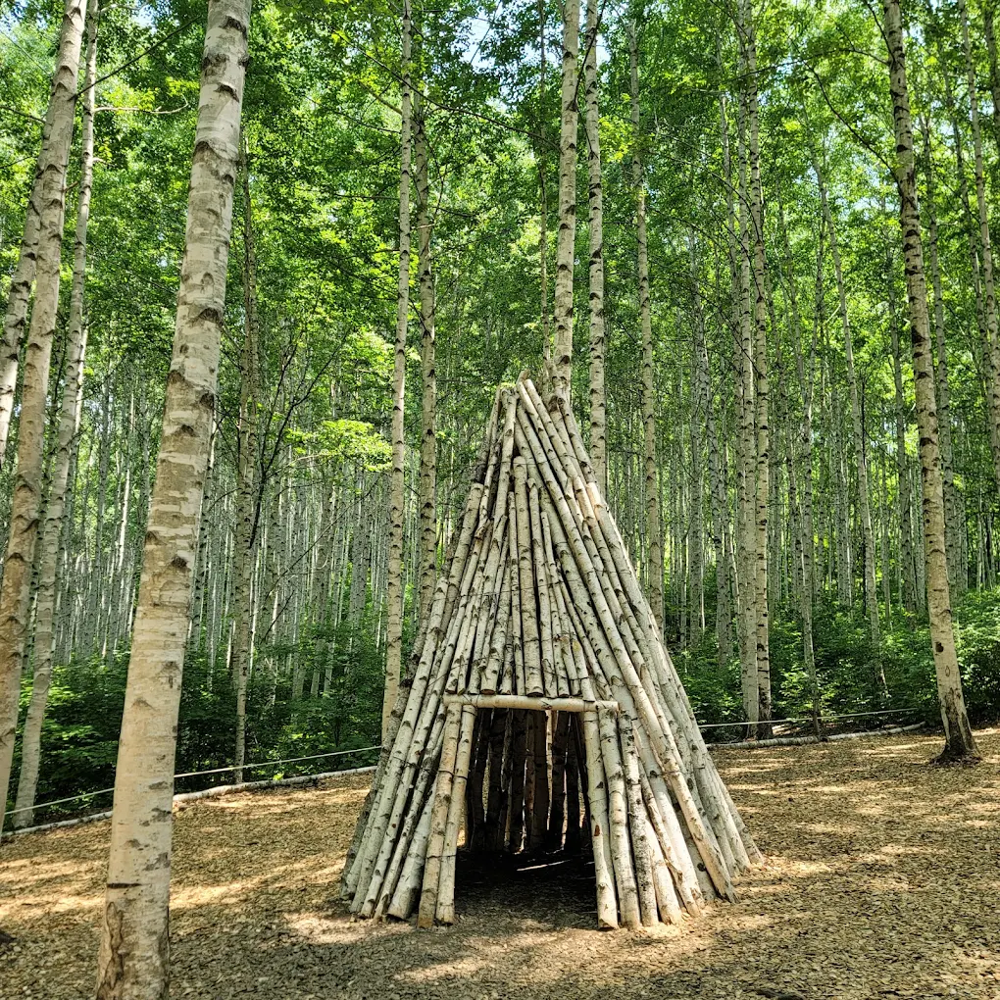
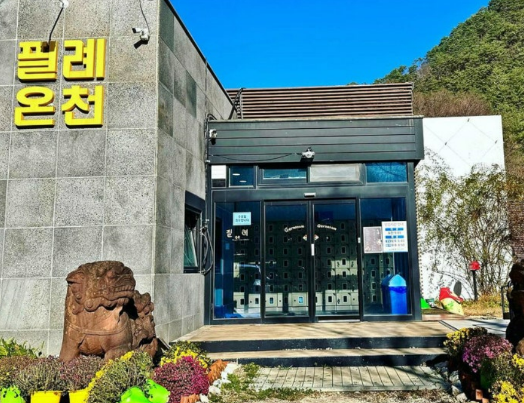

04 · 콘텐츠

인제의 사계절, 현지인만 아는 진짜
단순한 "방문"이 아니라, 다음에 또 오고 싶은 "이유"를 만듭니다.

SPRING · 봄
산나물
내린천·점봉산 자락
명이나물 캐기 체험
SUMMER · 여름
블루베리
넷강마을 블루베리
수확 + 잼 만들기

AUTUMN · 가을
자작나무숲
천연림과 순백의 자작나무 숲
로컬 한정식

WINTER · 겨울
필례 온천,노천탕
온천과 캠핑으로
몸과 마음 회복